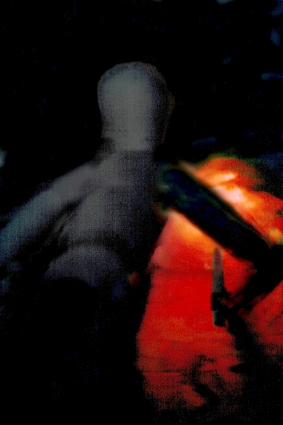

Slope (Part 2)
by
Andy Robertson
She is not close, and he cannot see where she has gone.
They have fled from the light of the distant fireholes into the shadow of rocks, and the Land without the Helm is very dark so that at first he blunders. But soon his eyes adapt and he manages to see the loom of nearby objects well enough to move silently.
He expects her touch and her voice every second.
He is Out in a way he never was before. The little movements of air in the eternal night brush his face. Any thing might creep up behind him. His head is bare to the freezing air, and the proximity sensors of the Helm are not there to protect him.
He keeps fearing something will light on the back of his neck, keeps looking round. Hours pass.
Once some thing does touch him: he smashes it with one sweep of the diskos, and sees in the glare that it is a thin-limbed spidery crab thing, too small and weak to be dangerous to him, exploring its environment with feelers. He would scarcely have noticed it in the past. There is a scuttling as dozens of others flee from him. He steps back, touching some slippery thing, and kindled to rage leaps away. He rushes toward whatever it is that may be stalking him in the Night, defies it. But there was nothing there, just a slime of lichen over stone.
He can just tell where the host is gathered, still watching for their reappearance from the shadows. He can half-sense their gazes upon him and he can hear them and even smell them a little, but he can only see them very very dimly. They are not yet moving on.
Surely, she will come soon.
At last there is the vaguest shifting of movement in the distant armoured men, the occasional gleam of fire reflected from metal, the rumour of preparation. They are starting to move in an organised way. They are leaving him. He instantly decides he must follow.
When he tries to return to the host, after forty hours in the silent night, they refuse to let him back. They stare at him in ranked order with their weapons ready and ignore the Word he utters. His Helm is lost and by then he cannot go back for it. He realises he is irreversibly classified as abhuman: he cannot rejoin his peers even as a refugee. He lingers, not far from them, trying to trace names and remembered faces in the silent puppets of grey metal, studying this slope of the shoulder or that turn of the hand. Memory has returned and he recalls his past comrades keenly. Surely that is Aryd? And the tall woman under her burden of tablets, is she Esse? And is that man who walks with the longer stride—Jointe, he who spoke so well in the last doomed debate? The days of their Preparation fill his mind, and his recall of each sworn companion is a sharp separate flavour. But the pains and hopes of that time were followed by the dull nightmare of walking the Land under the Helm's suppression, when all oaths were forgotten and all friendships dissolved. Who they are under their Helms cannot matter now. They were there and full of life, and now they are here and their names are meaningless.
When at last he creeps away he hears behind him a hiss of breath and the sound of footsteps. He tries to speak to her, but she is silent. She lets him get close enough to feel her breath on his face. She touches his breastplate, once, and then she goes. He tries to follow but is instantly lost.
Wearily, he returns to tracking the host. What is she? Why does she fear him so? Fantasies of love and tenderness stir in his mind, but a deeper warning beats from ancient tales and from the doctrines of Preparation. She called him out of safe obedience, for what reason? To rescue him? For love? Or for purposes of her own? She lives in the Night.
When next the host sleeps, he huddles under rocks close to them. He manages to contrive a hood from his cloak to pillow and protect his head. The fabric will not tear or yield to any claw, and the scurrying insect-crabs cannot chew through it. He already regards them as no threat to him, mere vermin, but it is hard to find sleep.
He wakes and finds she is with him, pressed against his armour, wrapped in his insulated cloak and warm. But when he moves to touch her she pushes him back and leaves him. She is very strong.
She is footsteps and the sound of breathing and a touch. She sees in the Night far better than him. She hardly ever speaks.
She lives in the Night. He cannot find her when she does not wish to be found.
After he has learned he must never, never, pursue her, she comes to him from time to time. She stinks of the Night and of new proteins from the Land, metabolised and exuded through her pores.
She brings him berries and squirming things and fungus but he will not yet submit to eat filth, for the legends say that to eat of the Land is to become one with it. In exchange for the food he will not touch she gobbles his food tablets eagerly. Their hands touch.
She does not speak to him. She does not respond when he utters the Word. Her beautiful face shows no more expression than a mask.
She is a survivor of an earlier hegira, he reasons, an earlier attempt to colonist the northern lowlands where human life may be possible, now gone feral. Computing time from the date of the previous Pulse of Migration he realizes that she and the handful with her must have lived at least five years in this Night, and he is awed. But he is still utterly alone, and she is not alone. He hears her talking to the others of her kind, and sometimes he sees them with her, but they do not talk to him or come close. Only she comes occasionally. The others vanish if he comes upon them with her. Only she will endure his presence.
Whenever he attempts to return to the host, they attack him. They drive him away again and again. They do not follow him when he flees but they do not permit him to approach, and once a slug from the remaining falchion shatters on his breastplate, laying him flat and stunned. He is truly part of the Night.
And once he has to fight some stalking beast for the night people. But when it is dead they do not thank him or let him join them.
They follow the dwindling host north-east, beside the river of fire, back to the frozen desert uplands. Perhaps if they find the easternmost end of the vulcanism they may skirt it and reach the great Slope which legend says leads down to fertile, human-habitable, volcano-lighted, lands, and there they may survive and build another humanity. They may yet survive, and find Light.
The mission of this hegira, this Holy Migration, is to seek out a path to the northern lowlands. Other missions have been sent out in the legendary past, to the East, to the West, and to the South, and each of these have returned messages of horror to the watchers in their high Tower. But from those who went to the North on Andros' ancient path has come only silence. This is compatible with many scenarios including complete extinction, but it is possible that some survivors have found the deep Land of which he spoke. No sacrifice is too great to achieve that.
Once, the legends say, long before the Redoubt was built, all that was left of true humanity was sixty people, a remnant of a remnant who survived. The legends are true. The estimate is confirmed by genetic studies which map the expansion of a tiny founder population that reached the bottom of the Valley in the days when the Sun still shone. From this handful came the Great Redoubt and Her hundreds of millions, and the prophets cry that such a feat may now be repeated, in the deeps of the Land. So was formed the Guild of the Last Migration, sworn to find a way. The stakes are tiny, a few hundreds of the Redoubt's millions against another eternity for Man, and reasons and ways have been found to gather those few hundreds, by honor, by lies, by love, through reward, through the desire of rivals, by faith, by politics and by dreams.
Yet with every chiliad that passes the Land is more terrible, and the deep refuges, if they exist, are far below the horizon of broadcast power, far beyond the range of any possible land-traversing machines depending on stored power. Machines are too fragile and weak to reach them: only human beings can travel so far, as Andros walked that Night, alone. And so they go by the hundred, blessed by the popes of the Guild, armored and shielded and Prepared as Andros never was in those ancient days, yet as helpless as he was in the Night.
He is sure that some horror will come to drive him insane. But nothing comes. Once he sees the Lights again, and freezes in the night, baring the capsule in his wrist, but the Lights pass on. Perhaps he is lucky. Or perhaps he is degraded to the status of a beast, so that he does not need the disguise and shielding of the Helm.
The lost ones have survived for years. How?
Sometimes he looks back at the Redoubt, and sometimes they rise high enough above the general background relief of the high lands that he cannot avoid seeing one or more of the five Watchers that surround Her. There is no Helm to shield his eyes now and their atropaic gazes suck at his mind like sores, but at this distance they are not fatal, particularly since their reality-altering perception is concentrated on the Redoubt and not directed at him. Of course he is never foolish enough to look at one directly.
He can survive. But there is nothing for him but the cold and silence, the host a little ahead of him in the Night, and the other lost night people around him; and sometimes, sometimes, her breathing and her touch.
They scavenge the dead. There are no more creatures to fight here but the wounded still fall out from the host from time to time. There are no doctors and delays cannot be allowed. A man who is sick or whose wounds do not heal as he walks will fall behind and be lost, perhaps two or three days after a fight. From his time under the Helm he has vague memories of one or other of his comrades vanishing without obvious reason, some time after this or that battle, and now he sees what happens to these men.
The first time, he goes to help. He finds the night people gathered round the sick, crawling, limping, armoured, warrior, waiting, not helping, not attacking, just waiting, for him to faint or die so they may move in. He feels a complete hatred for them. But he cannot attack or heal or mediate or aid. There is absolutely nothing he can do.
When the wounded man falls at last one knocks his diskos away with a club and the others gather. The Helm he picks up much later will not register him as human or mate with his armour and is useless to him.
He sees also with sure certainty something he has only suspected before now; all the night people are women; no men have survived in the Night, none at all.
That sleep-time she comes to him again, and this time her hands are reaching for the catches of his armour and blood is on her breath. She is persistent and blows do not stop her, and though physically he could overcome her, he wants this, too. In a hollow between rocks she makes him unarmour and she drains him of seed: and when he recovers from the spasm of sex he realises that the other lost people are there a little distance away, gathered around them in the Night. He expects death then, he sees himself as more wounded prey, he expects a knife or a rock, he closes his eyes and does not call the diskos to his hand, but they do not kill him. She licks up spilled ejaculate from his groin and they leave him in the dark, and she goes away with them, away but not far away.
They are not far away, but they do not let him get close, ever.
They have left a small pile of salvaged food tablets which he takes and stores. He clothes himself again and checks his armour and huddles alone in the Night.
He dreams true dreams of the Redoubt, now, and his mind is full of memories. He remembers one he loved. He remembers how he dared to speak to her for the first time, snatching a chance to be with her, and how her soul rose to her throat and a blush flowered there. He remembers the first time she permitted his touch and how she trembled in his hands. He remembers their hopes of bliss, and he remembers their parting: and he wakes and sees the night-woman squatting on the ground near him, as still as a lizard, her eyes moving and shifting in the dim flares of light and never resting.
How long have these women lived in the Night, preying on and scavenging from the hegiras? Have some of them, even, been born Out here? And are women stronger than men, stronger yet somehow more vulnerable to becoming utterly one with the Night? The hegira is a colonisation mission and there are an equal number of women in the host, but he cannot think of them as female. Love and sex were suppressed in them all along with their humanity before they were sent Out. But now love has returned to him, endlessly seeking in the night, and dragged him from the ignorant dark into knowledge, and found him a mate.
He understands, now, that she and those with her are not human. They have survived here only because they have lost all humanity and there is nothing in them for a pneumavore to sorb: just as his humanity was artificially suppressed in an attempt to make him invisible to the Eaters. But the intention of the Preparation was that his human nature and memory would return when the Helm and its blocks were removed, and if the night people have lost their souls they have lost them a second time and forever.
Yet, they come from out of humanity, and now he remembers a thousand names for them, whispered to the cradle, tallied by sciences so ancient they are become parable and legend. She held up the mirror to him, and he filled it with need and mistook that for love. So it has always been. All that it has ever been necessary for the sidhe, the lilim, the kaallikanzari, to do, is to hold up the mirror to a human being. People fill the universe around them with humanity, they insist that a rag, a bone, and a hank of hair has a personality, so how can something with an intellect and a face and a human body be refused as much even when it lacks a soul? And so victims have insisted that the magical stranger they love has feelings and a spirit like unto them: so they have donated the humanity the facultative social predators and brood predators lack; and so the abhumans have thriven on the borders of human kind since they first emerged, long before the fall of Night, splitting off from humanity to consume humanity again and again in clade after parasitic clade.
It is no surprise that the same pattern should be followed by the lost survivors of the hegiras, especially since the most truly human are the most vulnerable to the Eaters and do not survive long Out here. A new species of abhuman is being bred here: succubae, inhumae, vampires of the Land, thriving under an evolutionary regime of terrible severity and beginning to breed. He remembers the endless prohibitions, the shibboleths, the Word, the Censors, the exhortations not to fall from humanity which he never quite understood, but understands now, for he is mated to one and may become one. He has mixed flesh and spirit, embraced a body as cruel as iron and a face that is a mask over no living love.
So, will he finally become one of the night people, purified of soul? Will they accept others, and wait in the Night till another hegira comes through here? Will he call from the Night, call to some woman, "Take off your Helm"?
And his child, if a child comes?
He cringes in the night, now, and closes his eyes, as she sits and watches him; he cries softly in the darkness; for he has grasped some fragment of the knowledge that bows the shoulders and shadows the eyes of the Monstruwacans. And Oh, it is simple, simple.
Whence came the giants and abhumans in the first case? Who is it whose hybrid and devolved children fill the Land?
Who if not Man? Who if not him, himself?
Every horror that walks the night in human form Out here is sprung from some such mating as his, far, far, back in time. Their ancestors were the criminals, the banished, the quarantined, the heroic, the hated and the lost.
Perhaps some predate the Redoubt and the fall of Night; but they do not predate humanity, for they are come from humanity. >That is why the Land reflects the Redoubt like an evil mirror, and why it is so terrible to men. If it was purely alien it would not be a place of fear, but from the tiny imps to the great Watchers the land is full of the abhuman, of that which is not simply alien but is kin no matter how distant to humanity, and that is why its horror is beyond words.
His soul absorbs this truth, and deep within he feels it begin to change and to learn and to grow in new ways, and he is helpless to stop it. He opens his eyes again and looks at her, and her expression is no longer utterly meaningless. Her gaze is measured and wise and full of instruction, and the message it carries is: >Even as you and I.
He has seen the future lying on the rocks, cut apart by a rotating blade one molecule wide. But he moves toward her again, and this time she does not flee.
The dreams and memories of the past that come to him are increasingly meaningless. The drugs and overlays and bright illusions that were employed to keep him below the threshold of human pneumasomatic activity and hopefully immune to the Eaters have been lifted from him. He remembers his life in the Redoubt. He remembers the long-debated and hundred-times argued Prophecy, the deep divisions and the doctrinal wars that rove the pyramid, the belief and the knowledge echoing back from the future that human beings would once more follow the ancient path of Andros' journey and find the deep Land of which he spoke, where they could build them a new Refuge. He remembers the Honour that was given him and his followers, the Honour that they could not refuse. He remembers again the one he left and he remembers her last words.
But he cannot connect that life with this any more. He cannot go back. Lying in the night-woman's arms, melted in her black vision, the memories fade.
The path of the host northward has been blocked by new volcanic activity, its attempt to strike left has ended in disaster, and now it blindly makes its way round to the east of that obstacle, climbing higher and higher into the bleak night.
They pass through a local sub-ecology centred round the corpse of a minor Titan that has died and whose organic parts will feed the creatures of the dark for many centuries. Its skeleton lies far away south, faintly luminescent, three furlongs in length. Creatures like giant fleas and oversized versions of the omnipresent cold-crabs swarm near it. The woman catches and eats them with casual ease, cracking their shells in her teeth. They are not dangerous to armed human beings but some of their higher-rank predators are. The host is attacked occasionally by these but the night people are not. They are not completely immune but it seems the creatures of the Land do not see them as alien.
The Land's ecology is fundamentally detritivorous, depending on the radiations and wastes and corpses of a variety of giant self-organising systems whose energy sources are outside its orbit and whose organization is far too complex to be simply described as living. The Redoubt is the greatest of these, but the Titans are the largest mobile examples. When one dies there is a flowering of life round it until its skeleton is picked clean of all flesh and salvageable mechanisms, perhaps ten thousand years later. This Titan, however, is so tiny compared to most that none of the abhuman cultures have attempted to mine it, and the risk they suffer skirting it close is correspondingly less. They pass the dead Thing and its penumbra of life without much loss.
The area of vulcanism is not a simple river of fire but a complex of fire-holes and lakes and lava streams breaking up and rejoining, with no clear border, but at last they are able to turn north, past the eastern flank of the fire-vents that have confused their ancient maps. The volcanic activity is intense and they move past a plain of choking smoke and fire. The armoured marchers ahead of him are continually visible to his eyes. His presence one hundred fathoms behind them is almost familiar and they no longer try to repel him if he approaches closer, but he does not try to rejoin them. He follows the host, and the lost night people follow him.
In this lighted area the night people shun his presence for a time. But at last he sees the woman again, quite close. Her frame is tall and strong. She meets his eyes and skitters back into the red mist, but not before he sees her limned against the fire clearly and sees her swelling belly.
They leave the vulcanism behind, and the almost-darkness of the Land returns. They are traveling north at last, and now they all travel almost together, with only a little distance separating them.
She comes to him again in the dark. She no longer wants to mix but she lies in his arms whenever they stop. Though she does not ever talk to him, she tells him things and teaches him things without words. She pulls him back to her, very strongly, if he tries to leave her.
She is unquestionably ripening with his child. Her face is not a human face but she is unscarred and beautiful there.
And at last...
At last, they come to a place where the whole Land tips down.
The Slope is not steep, but it seems it will never cease. There is no light any where down there, not even the dull glow of occasional fire-holes.
Behind them in the south-west he can just see the Final Light on the top of the Redoubt, shining above the dull glooming of distant fires, but nothing else. He wonders if anyone peers from the high Tower, and what they report.
They are at the last fringes of the Night Land. If the ancient stories are true, they will descend now for ten days or twenty days in utter dark unhunted by any thing: and on the tenth or the twentieth day they will see before them a dim light, a shine in the night, their new Land. And there in that Land they will fight beasts and monsters enough but never one of the twisting trees and constellations of blackness and radiance that are gathered about the Redoubt like sharks round a sinking ship. They will fight and die but only death will threaten them and nothing worse, for there are no Eaters in that land of Light. They may recover civilisation, and live, and build. Perhaps they may build a new Redoubt.
At last, their journey is begun.
But he sees some thing else. The Slope ahead is not dark as it was in the days of Andros. There is utter darkness there, but in the darkness far ahead there is the hint of unnatural movement and life. The last fringe of the Night Land is still to be escaped: for there on that fringe, on the top of the mighty Slope, is a hive, a constellation, a city, of the Lights, of the Eaters, waiting for them.
For a little while they stop. He is in utter despair. The host is gathered on a wide sloping plateau ahead of him and the night people squat behind him. He can just see them both.
He cannot see the Eaters as well as one under the Helm, but even he can see that the pneumavore activity ahead is not a temporary matter but is something like a permanent habitation. In the far distance the Lights stream through the air about their own business, coming and going. Their presence extends to left and right indefinitely. It is doubtful that they came here to catch human beings, it is doubtful they see human beings as any thing more important than berries to be plucked or any different from other creatures that gain an intelligence high enough to sorb, but none of this will save them. If they go down that Slope they will be worse than dead. Their eternal part will be consumed, and for them the cycle of birth and rebirth will end forever.
Or perhaps not. The host is waiting and resting here but it is not turning back. All of them have survived repeated scans and attacks by the Eaters. They are the survivors of survivors and apparently for them the Helms are sufficient protection.
And the night people are dead inside already. All but one, who carries life within her.
She is quite close. When he turns his head to her she is already looking intently at him.
And now she rises and comes to him, and crouches before him where he sits.
She has moved squarely in his field of vision, and though she does not speak her intent and direction now become plain, communicated by her posture and perhaps by something too basic and ancient to be called telepathy. She stares at him. He receives knowledge. Gazing into her eyes, in the dim glow of distant fires, it slowly becomes clear to him that this halt is no surprise. This place is familiar to her. This has happened many times before. She is expecting them to turn back here. She knew this would happen.
The hegiras turn back here, he realises: and then they wander further in the Night, with the night people following, picking off the wounded and dying, protected by them, living off them, until the very last and there are none left. Then perhaps the last few selected survivors join the night people. And they wait, a year or two more, until another host comes. So it has been for long, perhaps as long as the hegiras have been going on. So it will be, as long as they continue. And when the last attempt is abandoned, perhaps the night people will have reached a perfect adaptation: perhaps they will be able to survive alone in the Night, for ever. That is how it has been.
And now, she does speak to him, for only the second time ever. She comes closer and she leans forward and grips his arms and stares more intently into his eyes, and from her mouth words issue. She strains with the effort of communication to him. Her speech is like the stridulating of insects, like the hum of machines, like the clatter of rock on rock, with a surface layer of human tone and grammar that is as complete a lie as the beauty of her face: yet though the words are confused the meaning is clear enough, and many times repeated. >Join us. An offer is made to him, and not only to him but to every thing that may spring from him, to all the children of his body. It is not love as humans know it that is offered; but in a deeper way it is the same thing as love, for it is the promise of life for all his descendants, offered by one who has the authentic power to give or withhold. He may become one with them. He is lucky, he is Honored. He and all his children may move from the status of prey to that of peer, they may join the people-after-people, the transcendent survivors; and here, now, if he consents, the new life may begin.
Then she is silent. Her eyes show no doubt that he will accept, for she has selected well. Choice and freedom are not part of her universe and he has no choice at all. She waits, poised on toes and fingers, summoning him, and the deep strategies of the abhuman flow in her clothes and her bones and her hair, ancient and predatory and victorious. He has no choice at all.
She has won?
But the game is not over. It is never ever over. There is another choice.
He rises, and puts her aside, and walks forward into the host.
They let him pass through them and do not attack. If they had he would simply have walked round them, but this is better, there is no need. Perhaps it is the long habituation of the journey, or perhaps it is the fact that he wants nothing at all from them now and that this is radiating from him in ways that can not be denied.
He passes through them, and starts down the slow overlapping bulges of rock that make up the Slope.
A little while goes by. From time to time he looks round to check they are following. He holds up his diskos on high, a blazing violet and jale torch, not worrying about charge now, and, yes, they are following him. For however short a time they have a captain and a leader.
After a little while more he is sure they are set on their way, and he lowers the diskos and moves to one side and stops and sits down. They continue on their path, ignoring him, walking past him. He sees the night people are coming too, as they must. They have no choice, after all. They are very close behind the armoured men and now they are seemingly accepted as part of the host and not generating any alarm. It is another victory for them, he supposes, in their universe of value and being, to be thus unfeared by those they will consume; but that is not his universe and, no, he will not after all journey there. He turns back here.
She does not look at him as she passes. He is fallen and she would eat his flesh if she had time, but she does not have time, for the prey species is travelling on for the first time ever and they must follow. He does not look at her. They all pass him by. He waits in the night, looking down the Slope at what is coming to meet them, coming to meet him.
The men and women walk down the Slope, through the blizzard of shining motes. The pneumavores come and taste, and finding no human soul here pass on toward the surer prey they sense ahead of them. Jointe is there, trembling as the implants thrust him below the threshold of human thought. Esse plods like a machine. They do not fall. None are consumed. They continue, his people, and now, at last, as he watches, his heart breaks with love for them.
Among them are the night-woman and her people. They are untouched. She does not even seem to see the Lights. They are invisible to her, he understands: she does not sense them and they do not sense her.
It surprises him that he has even a few seconds remaining to watch. He should have been consumed at once, but the whirlpools of light pause a little distance from him and he has time to make his last reckoning, deathly-wise.
The host will continue through the night, guided by untiring machines.
The night people will follow it, and if any thing will survive whatever other perils lie ahead, they will.
His child will wake in the deep Eden, or it will not. If it wakes, perhaps it will be human, with a soul, despite its mother. Perhaps, perhaps, it may be part of a new and human race.
All is done.
Are the Lights many beings, or one? They still hesitate. They are oddly venal and understandable now: this much they have in common with humanity: greed, and calculation. If they approach he may suicide. They can tell he is different, but they cannot know what he knows, and so they wait, edging slowly closer. It amuses him.
In his wrist, the capsule pulses. One move would pluck it forth. His pneumasome would fly free, split apart from his flesh by ancient unforgotten cunning. To whatever lies beyond life.
But he has never loved. Or rather, this is his love.
© 2001 by Andy Robertson.
Image © by Kawkawpa.